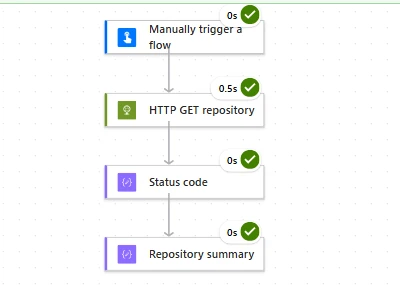
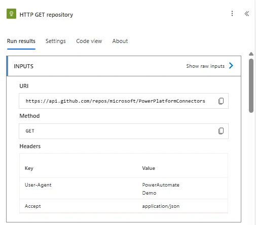

- Power Automate
- Level 3 · Triggers and connectors · 7 of 7
HTTP requests and custom connectors
More than a thousand connectors exist, but sooner or later you need a service that has none. The HTTP action calls any web API directly; a custom connector wraps the same API so makers get friendly actions.
A request and its response
WhatThe HTTP action sends a request (method, URL, headers, body) and returns a status and a body.
WhyAny service with an API becomes reachable, even without a connector.
DemoRead a public GitHub repository's details.
One HTTP call
GET
https://api.github.com/repos/microsoft/PowerPlatformConnectorsHeaders:
User-Agent, Accept: application/jsonStatus code?
200
Read the body: name, stars, language
4xx
Your request was wrong (401, 404)
5xx
The server failed; retry


Reading the response

Expressions and their values
| Expression | Value |
|---|---|
outputs('HTTP_GET_repository')?['statusCode'] | 200 |
body('HTTP_GET_repository')?['full_name'] | microsoft/PowerPlatformConnectors |
body('HTTP_GET_repository')?['stargazers_count'] | 1303 |
body('HTTP_GET_repository')?['language'] | C# |
| Method | Does |
|---|---|
| GET | Reads |
| POST | Creates |
| PATCH / PUT | Updates |
| DELETE | Removes |
Authentication
| Option | Use for |
|---|---|
| API key in a header | Simple services |
| Basic | User name and password (avoid where possible) |
| Active Directory OAuth | Microsoft Entra ID-protected APIs, as an app |
| Managed identity | Azure resources |
Never type secrets into the action: keep them in a Secret environment variable backed by Azure Key Vault, and turn on Secure inputs so they don't show in run history.
HTTP action or custom connector?
Which one?
Will this API be used in more than one or two flows, apps or agents?
No
HTTP action
Yes
Custom connector
| HTTP action | Custom connector | |
|---|---|---|
| Defined | In each flow | Once: host, auth, actions |
| Fields | Raw JSON | Friendly names in dynamic content |
| Licence | Premium | Premium |
| Data policies | As HTTP | Classified on its own |
See the Custom connectors article for building one end to end.
New to this? Start from the basics optional
API: a web address a program calls to get or change data.
Header: extra information sent with the request.
Common mistakes
- Secrets typed into headers.
- Ignoring the status code: a 404 can still return a body.
- Calling an API in a tight loop and getting throttled.